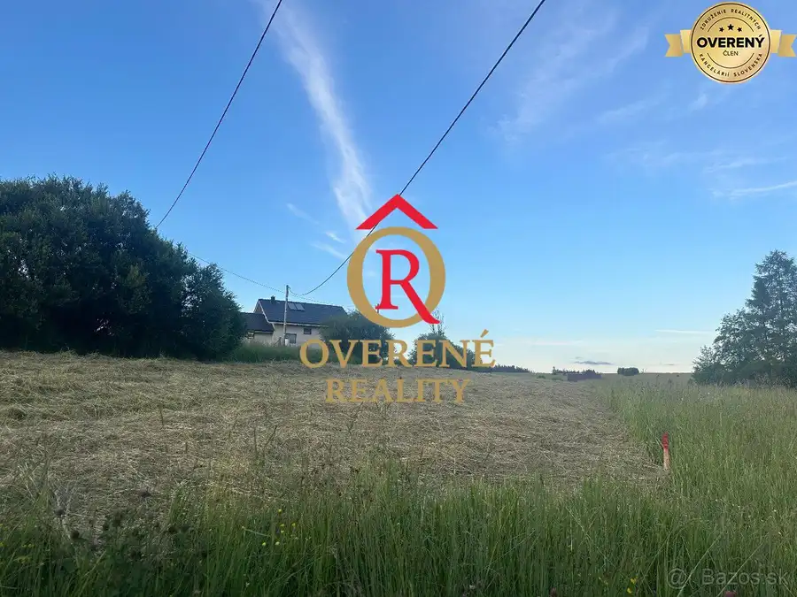
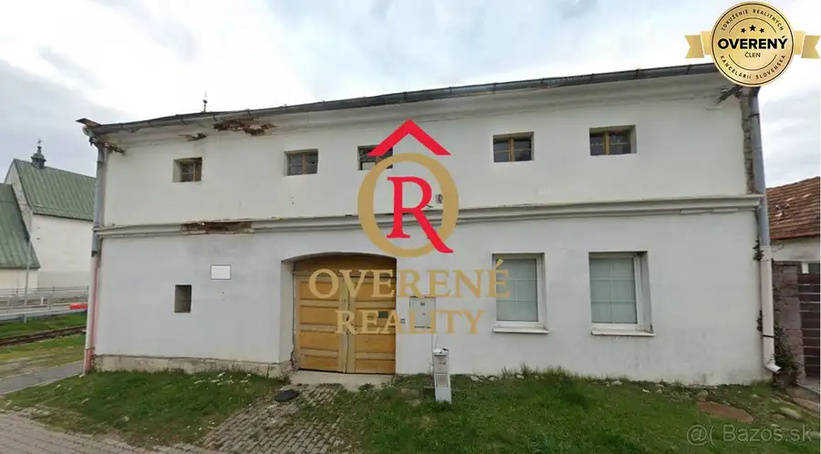
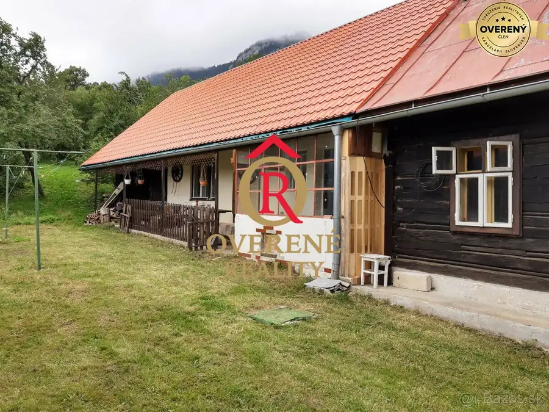
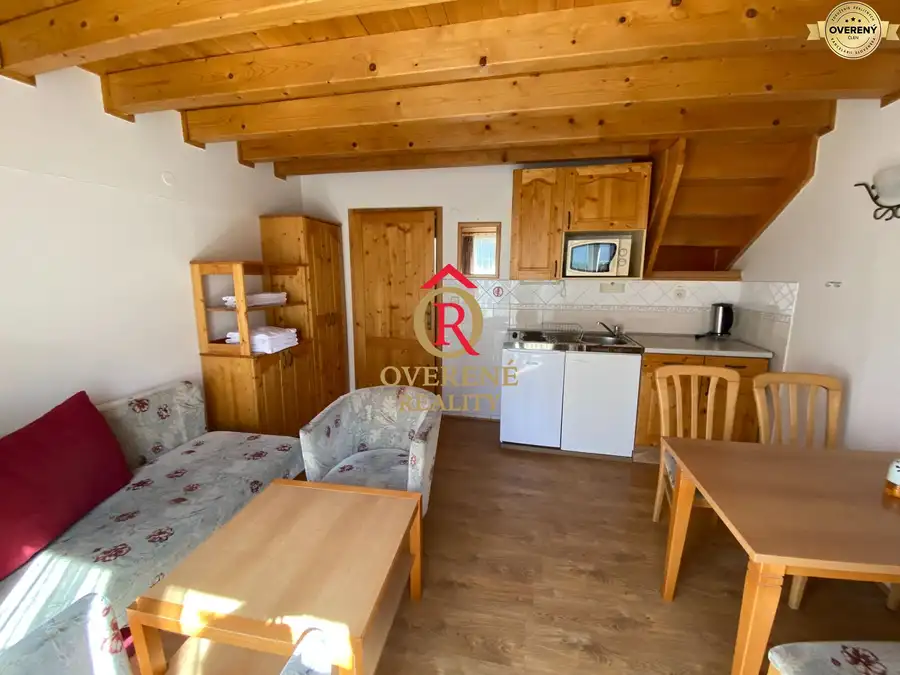

Aktuálna ponuka
Nehnuteľnosti, ktoré ponúkam
9 nehnuteľností na predaj a prenájom. Vyberte typ, alebo napíšte lokalitu.
9 z 9 ponúk
 Pozemok8
70 000 €Stavebný ,slnečný pozemok V Liptovskej Porúbke 700m2
Liptovská Porúbka
4-izbový94.26 m²
Ak hľadáte pokojné a príjemné miesto pre výstavbu rodinného domu, ponúkame na predaj slnečný a oplotený pozemok s výmerou 700 m², situovaný v peknej…
Pozemok8
70 000 €Stavebný ,slnečný pozemok V Liptovskej Porúbke 700m2
Liptovská Porúbka
4-izbový94.26 m²
Ak hľadáte pokojné a príjemné miesto pre výstavbu rodinného domu, ponúkame na predaj slnečný a oplotený pozemok s výmerou 700 m², situovaný v peknej…
 Pozemok3
81 500 €Ponúkame na predaj stavebný pozemok v lokalite Liptovské Sliače
Liptovské Sliače
815 m²
Ponúkame na predaj stavebný pozemok v atraktívnej lokalite obce Liptovské Sliače s úžasným výhľadom na nádherné vrchy Liptova, s celkovou výmerov 815…
Pozemok3
81 500 €Ponúkame na predaj stavebný pozemok v lokalite Liptovské Sliače
Liptovské Sliače
815 m²
Ponúkame na predaj stavebný pozemok v atraktívnej lokalite obce Liptovské Sliače s úžasným výhľadom na nádherné vrchy Liptova, s celkovou výmerov 815…
 Byt9
146 000 €2-izbový byt s predzáhradkou a dvomi parkovacími miestami – Hôrka -PP
Hôrka
2-izbový75 m²
Dispozícia Byt disponuje premyslenou dispozíciou, ktorá zabezpečuje dostatok súkromia pre všetkých členov domácnosti. 2 samostatné izby kuchyňa…
Byt9
146 000 €2-izbový byt s predzáhradkou a dvomi parkovacími miestami – Hôrka -PP
Hôrka
2-izbový75 m²
Dispozícia Byt disponuje premyslenou dispozíciou, ktorá zabezpečuje dostatok súkromia pre všetkých členov domácnosti. 2 samostatné izby kuchyňa…
 Nebytové priestory7
490 000 €Ponúkame na predaj komplet zariadenú reštauráciu v obci Hôky
Hôrka
252 m²
Ponúkame na predaj výnimočnú investičnú príležitosť – kompletne zariadenú a dlhodobo prosperujúcu reštauráciu s profesionálnymi bowlingovými dráhami…
Nebytové priestory7
490 000 €Ponúkame na predaj komplet zariadenú reštauráciu v obci Hôky
Hôrka
252 m²
Ponúkame na predaj výnimočnú investičnú príležitosť – kompletne zariadenú a dlhodobo prosperujúcu reštauráciu s profesionálnymi bowlingovými dráhami…

Pozemok4 65 500 €Na predaj slnečný stavebný pozemok v obci Rabčice! Rabčice 845 m² Základné informácie: Výmera: 845 m² Terén: rovinatý Lokalita: tiché prostredie s príjemným okolím Občianska vybavenosť: potraviny približne 500 m od…
Ostatné10 700 000 €Ponúkame krásnu historická usadlosť z r. 1885 vo Veľkej Lomnici ! Veľká Lomnica 7-izbový1061 m² Niektoré nehnuteľnosti sa nekupujú len preto, aby sa v nich bývalo. Kupujú sa preto, aby sa zachovala ich história a vzniklo miesto, ktoré bude žiť…
Chaty a chalupy10 175 000 €Chalupa v Liptovskej Anne na pozemku 1 417 m² s možnosťou výstavby Liptovská Anna 7-izbový145 m² Ponúkame na predaj chalupu v obci Liptovská Anna, situovanú priamo v intraviláne obce, na priestrannom a kompletne oplotenom pozemku s výmerou 1 417…
Apartmány10 169 000 €Investičný rekreačný apartmán v Holiday Village Tatralandia | 59,24 m2 Tatralandia-liptovska-ondrasova, Tatralandia/Liptovská Ondrašová 1-izbový59 m² Ponúkame na predaj dvojpodlažný rekreačný apartmán – mezonet v obľúbenom celoročne vyťaženom rezorte Holiday Village Tatralandia, situovanom v… Byt7 177 000 €3-izbový byt s lodžiou, Podbreziny – Liptovský Mikuláš Liptovský Mikuláš 3-izbový68.8 m² Byt sa nachádza na 2. poschodí zo 7 v zateplenom bytovom dome s výťahom. Prešiel čiastočnou rekonštrukciou a ponúka praktické dispozičné riešenie…Tomuto výberu zatiaľ nezodpovedá žiadna ponuka. Napíšte mi, čo hľadáte.